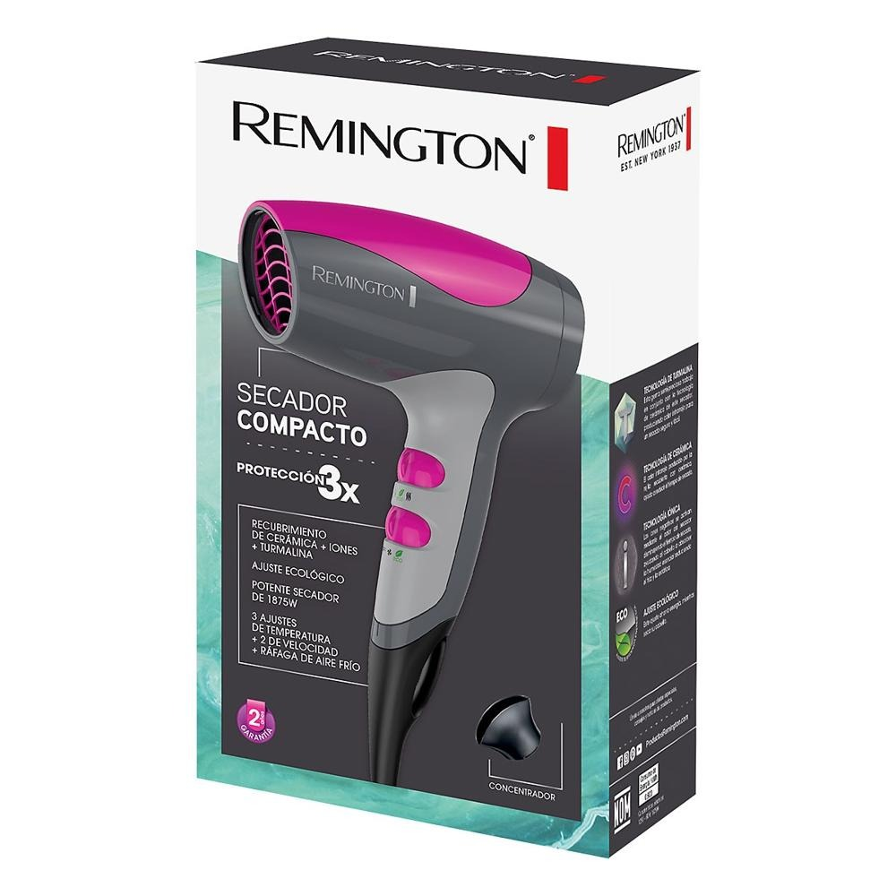
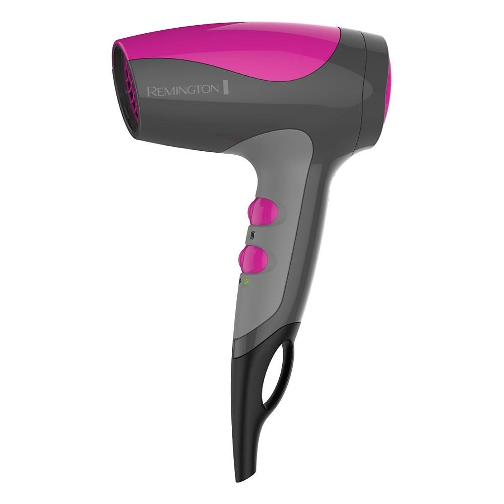
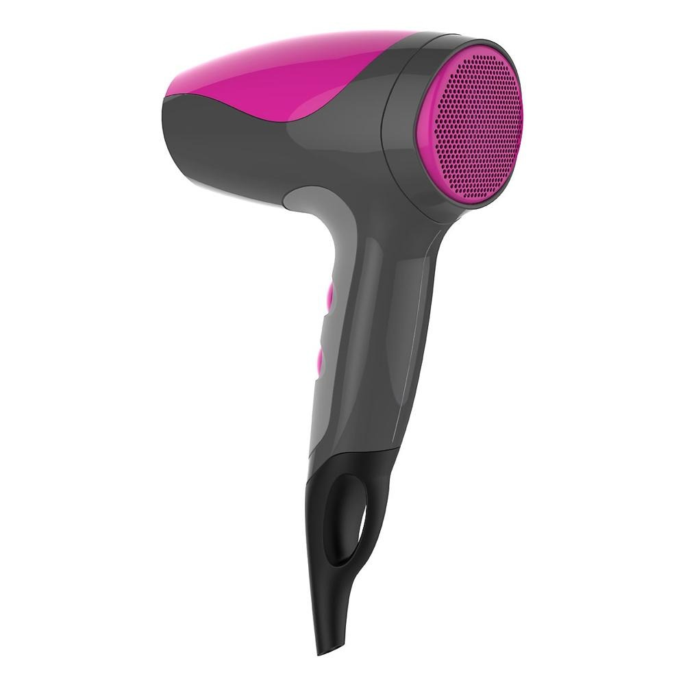

Remington · Modelo D5000
El modelo D5000 de Remington está pensado para un uso práctico y funcional. Entre sus características destacan Crea tu cuenta; Inicia sesión; Tu carreta está vacía; Celulares y Accesorios Telefonía Fija Accesorios para Celulares Celulares y Smartphones de Prepago Celulares y Smartphones Desbloqueados.
| Marca | Remington |
|---|---|
| Cuotas | Monto |
| 3 | Q76.29 |
| 6 | Q38.14 |
| 6 | Q38.14 |
| 10 | Q23.21 |
| 10 | Q23.21 |
| 12 | Q19.53 |
| 12 | Q19.53 |
| 15 | Q15.70 |
| 15 | Q15.70 |
| 18 | Q13.20 |
| 18 | Q13.20 |
| 24 | Q10.27 |
| 24 | Q10.27 |
| 36 | Q6.90 |
| 36 | Q6.90 |
| 48 | Q5.22 |
| 48 | Q5.22 |
| Cuotas | Monto |
Fuente principal: https://www.pacifiko.com/compras-en-linea/secadora-remington-compacto-y-facil-de-llevar-d5000&pid=MDU0MTcxNT